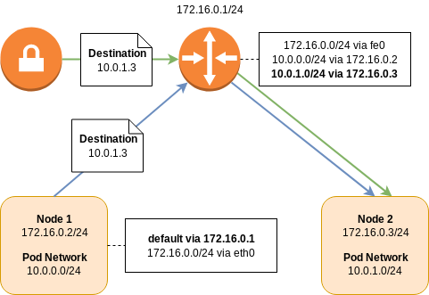
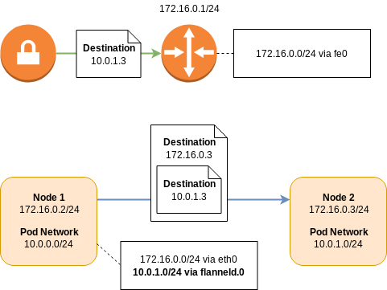
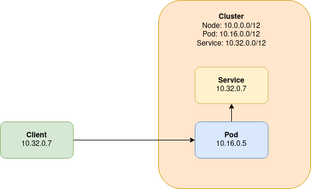

Kubernetes Networking
Networking in a Kubernetes environment is complex. It’s up to the end user to select a container network interface (CNI) compatible plugin to provide connectivity between pods and the wider world. The choice of plugin has effects on how Couchbase Server can be used and how it must be configured via the Operator.
Stateful vs Stateless Deployments
Kubernetes was designed primarily to be used with stateless applications. An application can be horizontally scaled on demand, and the service discovery layer will automatically adapt and load balance across all instances of the deployment.
The Couchbase data platform is a stateful application, and differs from the Kubernetes norms in a few key respects. Most notably is that the service cannot be load balanced — access to a document is controlled by the client software, which hashes the document identifier and maps it to a bucket shard to determine which cluster member contains the document. For a high performance database, this avoids having to perform hashing at the server layer, freeing up CPU resources, and also improves latency by not having to redirect the requests to the target server. Thus each server must be individually addressable.
If a pod instance of Couchbase Server were to be deleted, the goal would be to reuse the data that exists on a persistent volume, and perform minimal rebalancing to create a replacement and restore the cluster to full working order. That persistent data contains references to the node name, which is either an IP address or a DNS name, and cannot be changed. In Kubernetes, there is no concept of a fixed IP address, thus the only stable identifier the Operator can use is DNS.
Network Options
There are two types of network options that you can choose from for your deployment: Routed networking or overlay networking. The choice is entirely up to you, unless you’re deploying on a particular container service that limits these options.
Please refer to the Couchbase Networking concepts page to understand how Kubernetes networking affects your options when designing your network architecture.
Routed Networking
Routed networking is by far the simplest approach.
A Kubernetes deployment consists of a cluster of nodes in a node network.
For example, consider 172.16.0.0/24; the network router will receive address 172.16.0.1/24, the first node will be on 172.16.0.2/24, the second node on 172.16.0.3/24, and so on.
The pod network is a network prefix which is split between Kubernetes nodes and used for the allocation of pod IP addresses.
For example, consider 10.0.0.0/16; the first Kubernetes node will receive the 10.0.0.0/24 prefix for pod allocation, the second 10.0.1.0/24, and so on.
In order for a pod on the first node to talk to the second, routing tables are needed to direct traffic.
The packet will leave the first node via its default route and arrive at the upstream router, as it doesn’t know about the location of the destination 10.0.1.0/24 network.
The router, however, does have this information.
It has a routing entry saying that to get to subnet 10.0.1.0/24, send it to the node at 172.16.0.3/24.
In order to establish a connection between two node networks, all you need to do is establish a VPN connection between the two routers. Remote network prefixes can be defined either statically or dynamically via a protocol such as Border Gateway Protocol (BGP).

| Some CNI plugins may use BGP peering between nodes to learn pod network prefixes. This has the benefit that routing can be performed at the node layer and not at a specialized router. This avoids an extra network hop, improving latency and throughput. However, unless those prefixes are also shared with the router, you will not be able to directly address pods over a VPN connection. |
| Some cloud providers may have CNI plugins which allow virtual network adapters to be directly attached to pods. These are allocated from the same IP address pool as the host nodes which provides even more simplicity, removing the need for separate node and pod network prefixes. |
Overlay Networking
Like routed networking, overlay networking has the concept of a node network and a pod network. An individual node learns about the addresses of its peers, and their pod network allocations, via service discovery.
Using the addressing scheme from the routed example, if a packet from a pod on the first node was destined for a pod on the second node, the packet would be intercepted by the network layer on the first node. The packet will then be encapsulated as either Virtual Extensible LAN (VXLAN) or Generic Routing Encapsulation (GRE), and then forwarded directly on to the destination node. The destination would then decapsulate the packet and forward it on to the destination pod.
Like routed BGP networks, all the routing happens on the node, distributing load and reducing latency. However, the encapsulation and decapsulation process is not without cost, and will adversely affect network performance.
When establishing a tunnel between two Kubernetes clusters that are running overlay networks, by default, the pods from one cluster will not be able to talk to the pods in another. While it is possible, it is not easy relying on a node receiving traffic from the remote cluster, performing SNAT to avoid asymmetric routing, and then encapsulating it an putting it into the overlay.

Service Mesh Support
Istio is currently the only supported service mesh.
Use of service meshes should, for the most part, be transparent to the Autonomous Operator and Couchbase cluster, however there are a few things to be aware of:
-
Dynamic Admission Controller Considerations
-
The DAC is part of the Kubernetes API, therefore governed by different rules to other Kubernetes services under Istio management. The Kubernetes control plane does not have Istio enabled, therefore the DAC cannot be provisioned with strict mTLS as the client will not have an Envoy proxy. The DAC may be provisioned with either no or permissive mTLS.
-
-
Couchbase Cluster Considerations
-
The service mesh must be enabled in the namespace before you install the Autonomous Operator and provision any Couchbase clusters.
-
You cannot enable/disable a service mesh in a namespace where an Autonomous Operator deployment is already running. This is especially true of migration to strict mTLS as Couchbase cluster nodes will not be able to communicate with one another during the upgrade. While an upgrade to permissive mTLS may work, it has not been tested, therefore is unsupported.
-
You should not configure the Autonomous Operator to use TLS if the service mesh is already providing an mTLS transport.
-
IP-based networking should not be used with strict mTLS.
-
In order to establish connections between a client and server when strict mTLS is enabled, both the client and server need to be running with an Envoy proxy, and be part of the same Istio control plane. For this reason, clients and XDCR connections originating from outside of the Kubernetes cluster must connect to a Couchbase cluster with either no or permissive mTLS.
-
Inter-Kubernetes Networking
Regardless of the network technology you deploy there are a number of rules to be aware of when forming connections between Kubernetes clusters.
Networking is complex, if in any doubt, ask an expert about IP address management (IPAM).
IP Address Ranges
Any addressable entity within the network must be unique. If more than one entity shared the same address, there would be ambiguity and network traffic may not end up being sent to the correct recipient.
For routed networking this means that for each Kubernetes cluster, the address range for the pod subnet and the node subnet must be different from every other pod and node subnet within the same network.
For overlay networking, only the node subnets must be unique as pods are not directly addressable from outside of a Kubernetes cluster.
VIP Address Ranges and Black Holes
Less intuitively, the IP address ranges chosen for Kubernetes services must also not alias with any addressable entity. These virtual IP (VIP) address ranges, can, however, be reused within different Kubernetes clusters as they are virtual within the Kubernetes cluster, and not visible to within the outside network.

In the previous diagram, we illustrate what happens when a VIP address range aliases with another addressable entity on the network. A client, is able to directly connect to a pod from outside of the Kubernetes cluster. The client’s address in the packet is 10.32.0.7.
When the pod tries to respond to the client, there is a problem in that the Kubernetes cluster’s VIP range aliases with that of the client. Instead of routing the reply back to the client, a service that aliases with the client’s IP address intercepts the reply, and the reply is most likely dropped entirely.
Network Policies
Kubernetes provides native support for controlling traffic flow across the network. Whilst this is not officially supported by Couchbase, there is nothing that should prevent the use of network policies when correctly configured.
Network policies require the underlying infrastructure to implement them, so refer to the guidance for your infrastructure on how to deploy them. They may be disabled by default on various cloud providers as well as require a network plugin (e.g. Calico or Cilium) to be deployed before they can be used. Each network plugin may have its own way of configuring the network policy or use the Kubernetes default CRD to do so. For the purposes of this documentation we only reference the default Kubernetes configuration to allow it to be reused or translated to the specific implementation required.
For more secure deployments, the typical approach is to have a deny-all traffic that is not approved within a namespace. If this is the case then the following rules need to be implemented to allow Couchbase Server and Couchbase Autonomous Operator to correctly function.
-
DNS resolution must be possible, typically by enabling port 53 traffic although this can be constrained to the DNS deployment namespace and/or pods as required.
-
If the dynamic admission controller (DAC) is used, then traffic between this and the Kubernetes API plus for port 8443 needs to be allowed.
-
The DAC is typically deployed once per cluster and may be deployed in a different namespace to the operator so ensure to correctly specify the namespace to use.
-
Port 8443 is the default port for traffic to the DAC so if this is modified for your cluster be sure to update appropriately.
-
-
The operator requires traffic to be allowed to the Kubernetes API to monitor and update Couchbase custom resource types correctly.
-
The operator requires traffic to be allowed to the Couchbase Server pods it is managing on the administration port 8091.
-
Couchbase Server pods require traffic to be allowed between each other on various ports depending on their configuration and the version of Couchbase Server used.
-
The recommendation would be to allow all internal traffic between these pods or within the namespace rather than constrain it by port.
-
-
Access to the Couchbase Server UI is via the 8091 (or secure 18091) administration ports.
-
SDKs require traffic to be allowed from their location to the Couchbase Server pods, primarily they use ports 8091/18091 and 11210/11207 for bootstrapping.
-
This will be specific to the SDK used but each SDK has a managing connections page.
-
The recommendation would be deploy Couchbase Server and Couchbase Autonomous Operator within a dedicated namespace and allow internal traffic within it. The limited external ingress and egress required can then be added as well. It may be good to start with this approach and then lock it down as required or to aid with debugging any issues found.
An example is provided to demonstrate the rules in action.